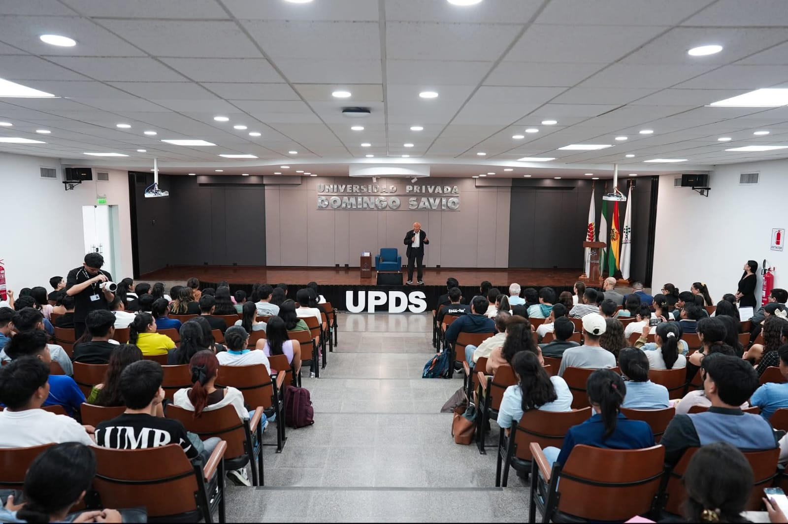

Sede del Congreso
Universidad Privada Domingo Savio

Casa de Estudios
Santa Cruz de la Sierra, Bolivia
La Universidad Privada Domingo Savio es una institución de educación superior boliviana reconocida por su compromiso con la formación académica de excelencia. Ubicada en la avenida Beni, tercer anillo externo de Santa Cruz de la Sierra, su campus alberga modernas instalaciones donde se han llevado a cabo eventos académicos nacionales e internacionales.
Recinto

CECYD
Universidad Privada Domingo Savio
Es el Centro Cultural y Deportivo de la Universidad Privada Domingo Savio, ha servido como sede para múltiples eventos académicos, culturales y sociales. En esta edición del congreso, el CECYD albergará las ponencias magistrales siendo el corazón académico del encuentro.
Auditorio

Auditorio UPDS
Universidad Privada Domingo Savio
Es el auditorio principal de la Universidad Privada Domingo Savio, diseñado para el desarrollo de actividades académicas, institucionales y eventos de carácter nacional e internacional. Ha sido escenario de conferencias, seminarios y actos de graduación, consolidándose como un espacio clave para el intercambio académico.